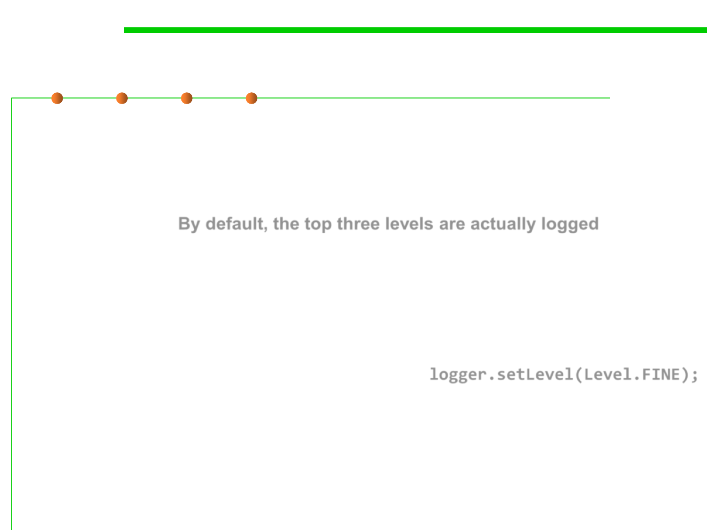

java.util.logging: Logger
7.4 Debugging
▪ There are seven logging levels for logger:
– SEVERE
– WARNING
– INFO
By default, the top three levels are actually logged.
– CONFIG
– FINE
– FINER
– FINEST
▪ Set logging level setLevel():
E.g., logger.setLevel(Level.FINE);
– Now FINE and all levels above it are logged.
– You can also use Level.ALL parameter to turn on logging for all levels
– Level.OFF parameter to turn all logging off.